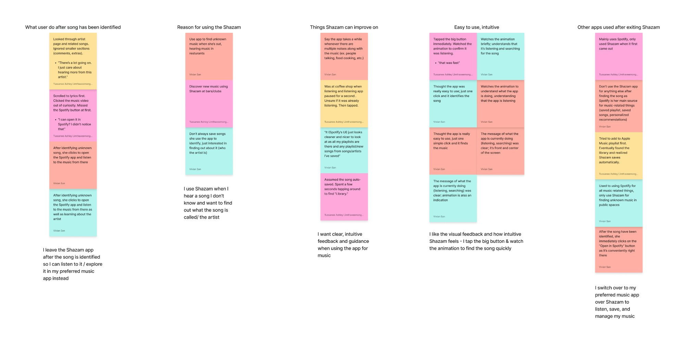

From Recognition to Discovery
Shazam has mastered one thing: identifying music in seconds. But the experience surrounding that moment—saving songs, browsing past Shazams, and discovering new music—has room to grow.
Through research and usability testing, we found users often hit a dead end after identifying a track, unsure where to go next or how to explore related music. This redesign focuses on strengthening the Identify → Save → Explore journey.
The "Identify and Bounce" Pattern
People turn to Shazam in moments of curiosity. A song plays, they tap the button, and in seconds, they have an answer. It's a magical moment of recognition. But for many users, the experience ends just as quickly as it begins.
Shazam is a doorway, not a destination
After identifying a track, users are pushed into other apps like Spotify or Apple Music to actually listen, save, or explore. Shazam becomes a doorway, not a destination.
Digital discovery feels shallow
Most digital music discovery happens alone—without conversation, context, or connection. It often feels shallow, repetitive, and limited to what users already know.
Shazam finds fade away
Over time, Shazam finds fade into the background. Songs are forgotten. Curiosity is lost. And users have little reason to return, even though Shazam is the very place where their discovery journey begins.
This redesign asks a simple but powerful question: What if Shazam didn't just identify music—what if it helped people truly discover it?
Understanding How People Discover Music
We began with a simple assumption: Shazam's biggest challenge was helping users identify songs faster. But early research revealed that speed wasn't the issue—continuity was.
Research Goals
- Understand how users discover music
- Observe what happens after a song is identified
- Identify friction points in saving, exploring, and returning to Shazam
Methods
User Interviews
In-depth conversations with Shazam users
Usability Testing
Observed real-world Shazam usage patterns
Affinity Mapping
Synthesized insights into themes
Competitive Analysis
Direct & indirect competitors
Key Insights
✓ Identification is flawless
Users tapped the Shazam button instantly with no confusion. The listening animation was clear and intuitive.
✗ But then they leave
Once the song appeared, users immediately left the app. Most jumped to Spotify/Apple Music to save, playlist, or explore.
✗ Discovery features are hidden
Many didn't know Auto-Shazam existed. Users described discovery as "shallow, repetitive, or lonely."
✗ No continuity
Saving songs required too many steps. Streaming apps reinforced echo chambers. Users craved connection and context in discovery.
Affinity Map from User Interviews
Click images to view larger. Use arrows to navigate between views.


These patterns reframed our understanding of Shazam's challenge. It wasn't about speed or accuracy—it was about continuity, connection, and discovery. Users weren't struggling to identify songs; they were struggling to do anything meaningful afterward.
Meet Sylvester
To move forward, we needed to define who we were designing for. Sylvester emerged—a music lover whose habits, frustrations, and goals embodied the gaps we saw across our research.
Sylvester Persona
(Add persona image)
"How Might We" Questions & Journey Map
Sylvester's journey helped us pinpoint the friction, and our HMW questions opened the door to a more connected, discovery-driven experience.
User Journey Map
Click to view the progressive journey stages. Use arrows to navigate through each step.

From Insights to Possibilities
With a clear understanding of our users and the gaps in their experience, we shifted into ideation. Guided by Sylvester's needs and our HMWs, we explored multiple directions for transforming Shazam.
Sketches: Exploring the Possibilities
We began sketching with one goal in mind: transform Shazam's song result screen from a static endpoint into a dynamic launchpad for discovery.
Early Concept Sketches
Click to view larger. Exploring save confirmations, tagging, user profiles, and social discovery.

The Breakthrough Moment
"What if we reframed the 'identified song' screen as a launchpad rather than a dead end?"
Instead of simply showing the track name, we imagined it as a gateway to deeper discovery: related songs, artist credits, user-generated playlists, and people who Shazamed the same track. This shift unlocked the core direction of our redesign—transforming a single moment into a continuous journey.
Rapid Iteration Through Lo-Fi Testing
We translated research insights into rapid lo-fi prototypes, tested them with five participants, and iterated three times. The goal: keep Shazam's instant identification magic while extending the moment into a continuous discovery experience.
Shazam Design Principles We Preserved
Single, focused action
The home screen remains a single, central Shazam button so users can identify music instantly.
Generous spacing
Lots of breathing room and clear visual hierarchy to reduce cognitive load and make the listening moment feel calm and intentional.
One or two actions per screen
Each page supports at most two primary tasks at a time, which prevents decision fatigue and preserves the app's quick-use DNA.
Key Design Changes from Testing
Home & Tagging
Problem: Generic tags like "mall" felt meaningless
Solution: Replaced with specific contextual tags (e.g., "LAX Airport") to create memory cues tied to the discovery moment
Song Results
Problem: 3/5 users said initial layout felt too dense
Solution: Increased whitespace, limited items shown at once, moved "Fans of This Song" higher to encourage social exploration
Save Behavior
Problem: Plus icon wasn't intuitive
Solution: Replaced with heart icon, added top-bar notification to confirm saves, maintained discovery flow
Continuity
Problem: Redirecting after save broke momentum
Solution: Maintained song result page as persistent discovery surface with lightweight inline confirmation
Lo-Fi Wireframes → Hi-Fi Progression
(Add wireframe evolution images)
Learning from Best-in-Class Experiences
We analyzed patterns from Depop, Spotify, TikTok, and Instagram to inform our social discovery and interaction design.
Depop
Adapted: "Find users" flow and likes page—discoveries tied to people, not just content
Spotify
Adapted: Blend/taste overlap indicator to surface shared taste and increase follow behavior
TikTok
Adapted: Quick favorites and short preview playback—low-effort engagement in a fast discovery loop
Adapted: Compact profile header that emphasizes media over metrics
Why these borrowings work: They extend, not replace, the core experience. Everything is additive and optional. They increase return value without clutter, make discovery social and memorable, and respect attention with short interactions.
Validating the Post-Identification Flow
Method: Moderated usability testing (remote via Zoom) using low-fidelity Figma prototype
Participants: 5 people familiar with Shazam or similar music apps
Test Scenario
While at The Corner Store, participants hear a nostalgic song. They use Shazam to identify it ("Dancing in the Moonlight" by Toploader), then save the song, tag where they discovered it, and follow another user who also saved the song.
High Impact Findings
Activation is obvious, but next steps are not
All participants could press the Shazam button, but several hesitated on the Song Result page
Density causes overwhelm
3/5 participants described the initial result layout as "too dense"
Tag specificity matters
Generic tags (e.g., "mall") felt meaningless; specific place names created stronger memory cues
Save affordance is intuitive when it's a heart
Participants expected a heart to mean save—replacing the plus icon reduced confusion
"I tapped Shazam, but then I wasn't sure what to do next."
"Which coffee shop? Be specific—that makes it more meaningful."
Usability Testing Session Screenshots
(Add testing screenshots or participant quotes)
What We Delivered
Continuous Experience
Flows from identification → tagging → saving → exploring → connecting
Modular Design System
Reusable components with clear hierarchy, ready for implementation
Social Discovery Layer
Lightweight, optional, and emotionally resonant—not overwhelming
"It respects Shazam's core value—speed, clarity, minimalism—while adding emotional depth and return value without clutter."
Why it matters: It gives users a reason to come back—not just to identify, but to explore, remember, and connect. It proves that even a single-tap app can support richer, more personal experiences when grounded in real user needs.
Final Hi-Fi Mockups
(Add final design screens)
What I Learned
Context is everything
Generic tags failed; specific place names created emotional memory cues that made discoveries meaningful.
Continuity over completion
Users wanted the discovery flow to continue, not redirect them away after identifying a song.
Social discovery needs clarity
Privacy controls and limited profile views required explicit communication to avoid confusion.
Additive, not disruptive
The best features extended Shazam's core magic without replacing it—everything was optional and additive.
Test early, test often
Three lo-fi iterations caught critical usability issues before hi-fi investment, saving time and improving quality.
Emotion drives retention
Turning ambient moments into memorable ones through contextual tagging created lasting emotional connections to discoveries.
Keep the Conversation Going
This project taught us how to turn a fleeting moment—hearing a song in a corner store—into a meaningful experience of memory, connection, and discovery. We designed, tested, and refined every detail with intention, and we grew as designers and collaborators in the process.
If you're building products that center emotion, context, and human connection—or if you simply want to chat about music, UX, or storytelling—I'd love to connect.